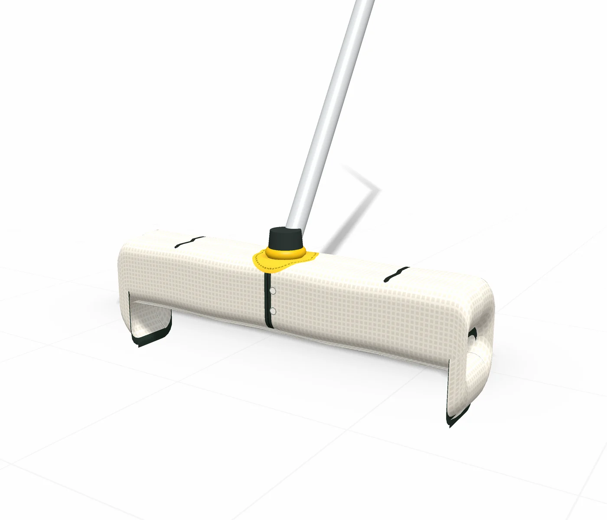
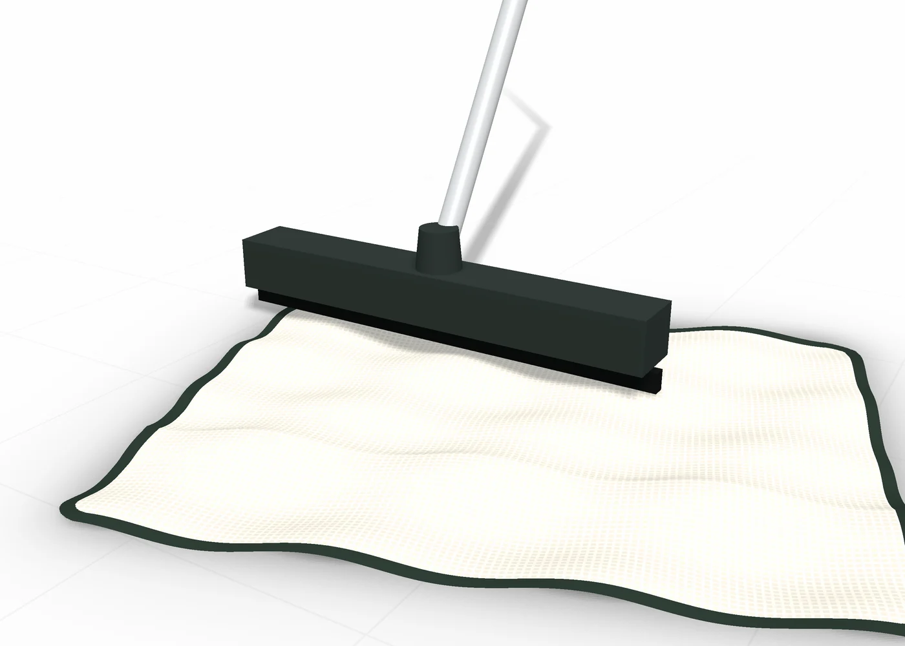
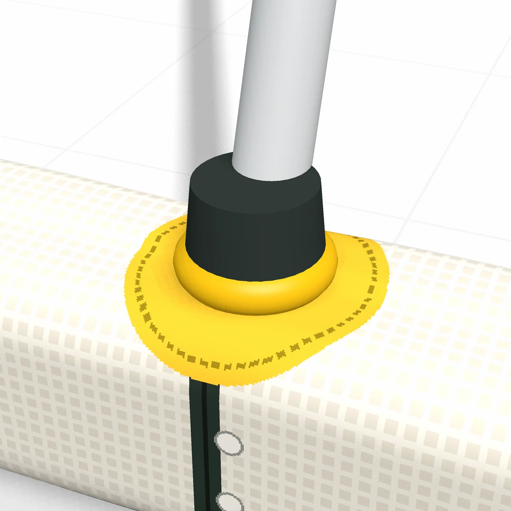
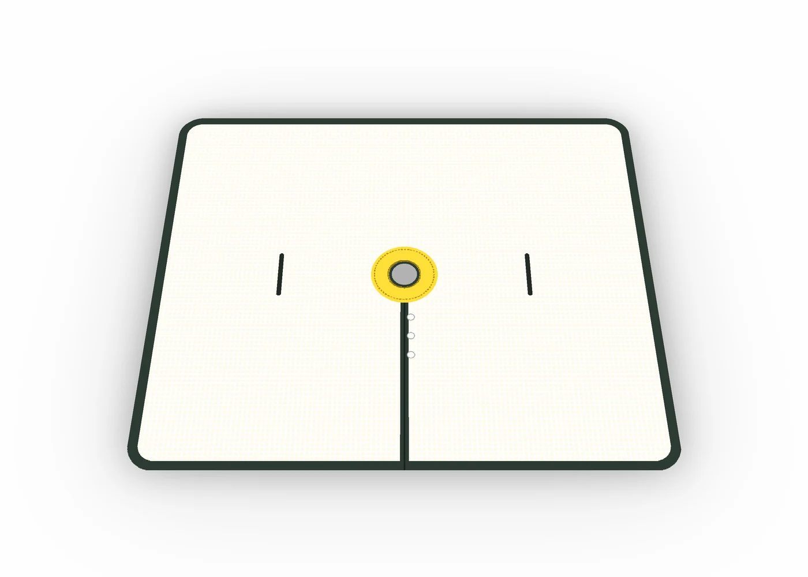

Elle se pose autour du manche, sans rien dévisser.
Une toile percée au centre, fermée par trois pressions et bloquée par un collier. Elle reste sous la raclette du premier au dernier passage.
- 12,90 € prix de lancement visé
- Manches de 20 à 28 mm

Une serpillière posée sur une raclette finit toujours à côté.
Rien ne la retient : au bout de trois allers-retours, elle a glissé, la lame frotte le sol à nu et il faut se baisser pour la remettre en place.
NOMBRILL règle ça par le centre. Le manche traverse la toile, et la toile ne peut plus partir.


Un œillet fait pour durer.
- Ø 30Œillet ourléGainé de biais, il ne s'effiloche pas au lavage.
- Ø 80Couronne double épaisseurElle répartit l'effort autour du manche.
- 3Pressions en résineLa fente s'ouvre pour passer le manche, puis se referme.
- 20-28Collier en siliconeUne taille par diamètre de manche, en millimètres.
Quatre gestes, sans outil.
- 01
Clipser
Ouvrez les pressions, passez la toile autour du manche, refermez.
- 02
Bloquer
Descendez le collier jusqu'à la raclette.
- 03
Rabattre
Glissez les bords dans les deux fentes pour couvrir la lame.
- 04
Essorer
Dans le seau, bloquez la toile au fond et tournez le manche.
Elle va sur les raclettes à manche central.
- Manche vissé ou fixé au centre
- Raclette de 35 à 45 cm de large
- Manche de 20 à 28 mm de diamètre
- Pas pour les raclettes à étrier ou à manche sur le côté

D'où vient NOMBRILL
Tout est parti d'une femme de ménage qui avait fait un trou au milieu de sa serpillière.
Elle y passait le manche, et la toile ne bougeait plus. Le tissu coupé s'effilochait à chaque lavage. NOMBRILL garde son geste et le rend solide.